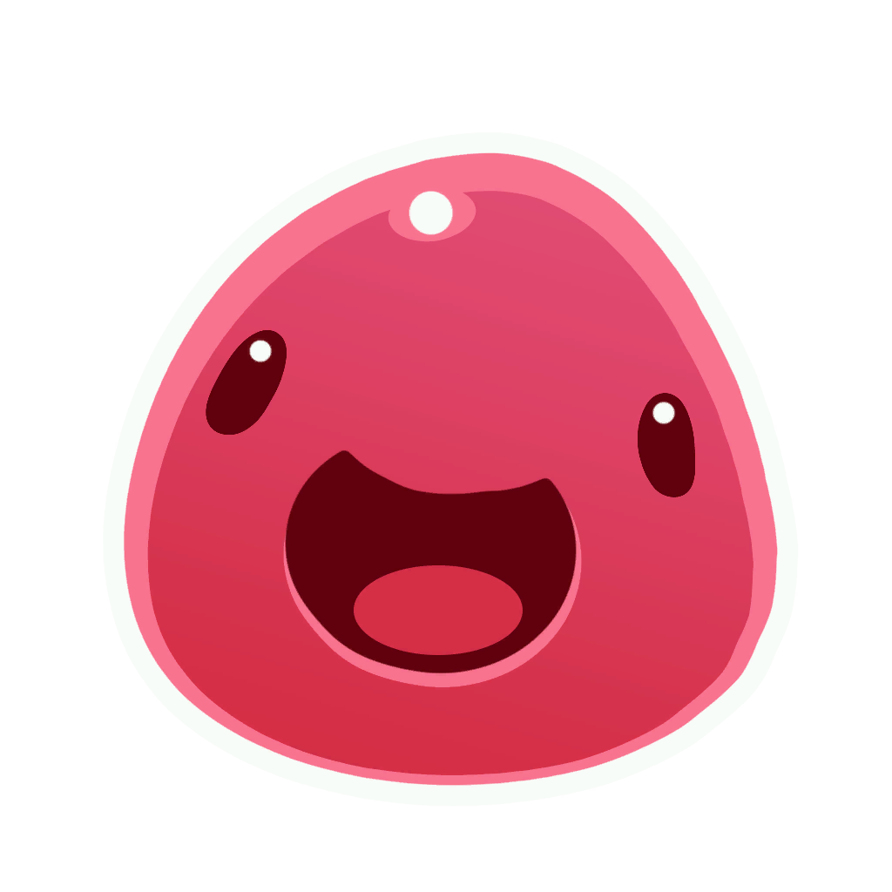

Slimes zijn de wezens in het spel die je moet verzamelen en voederen.
De basis-slijm is een roze, met geen speciale kwaliteiten.
Slijmpjes kunnen de "plorts" van andere slijmpjes opeten, om een "Largo" te worden. Als een Largo de plort
opeet die niet van minstens één van de slijm of een door-de-slijm-gegeten plort is,
dan zal de Largo in een "Tarr" veranderen. Tarrs zu-
llen met andere slijms fuseren,
dupliceren en kunnen zo jouw hele boerde-
rij verpesten.
Largo is de naam voor een slijm die de plort van een ander soort slijm gegeten heeft. Een Largo kan gezien worden als een fusie, sinds de eigenschappen en het uiterlijk van beide slijms in de Largo te zien zijn. Largo's zijn vele malen groter dan normale slijms en kunnen niet meer terugveranderen naar de slijm die het ooit was. Hierdoor kunnen Largo's niet meer worden opgezogen door de Vacpack. Ook is het favoriete eten van de Largo een combinatie van beide slijms. Een Largo geeft twee plorts als het eten krijgt dat het lust, maar vier als je hem zijn favoriete eten geeft ( twee van elk ). Let op! wanneer een Largo een plort eet van een soort die hij zelf niet is, dan verandert de Largo in een Tarr.